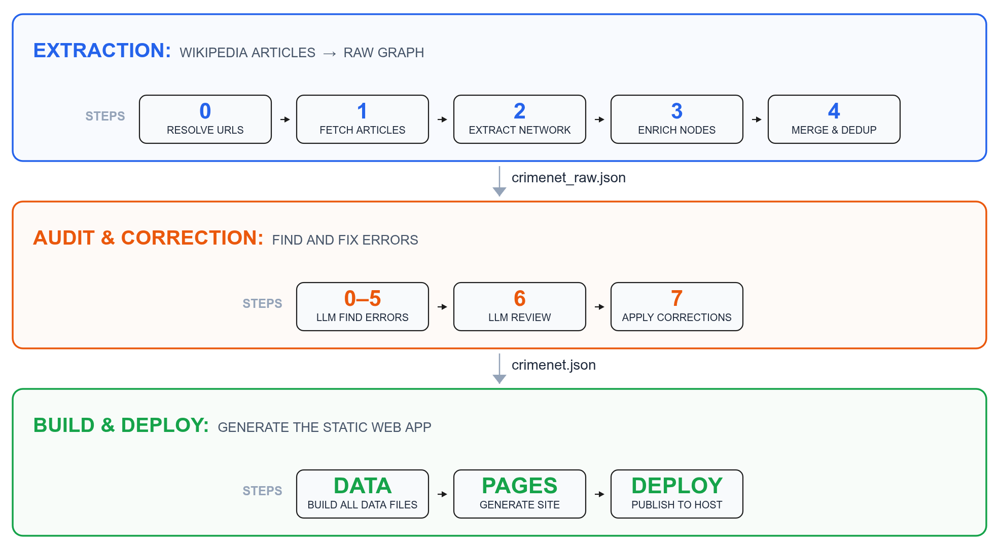
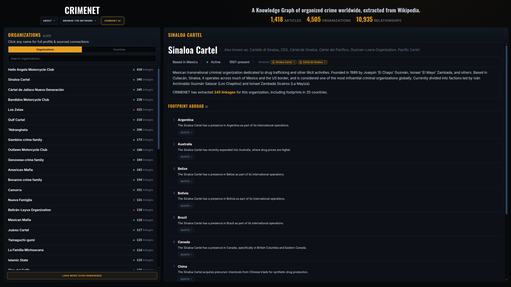
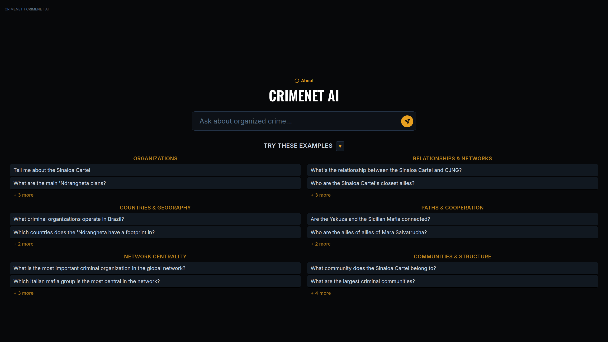
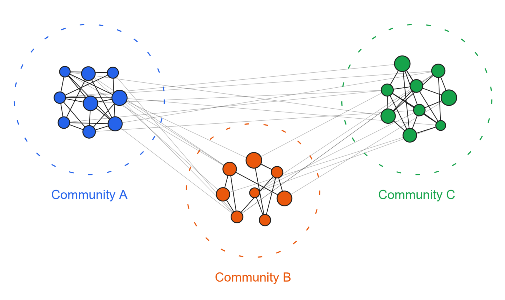
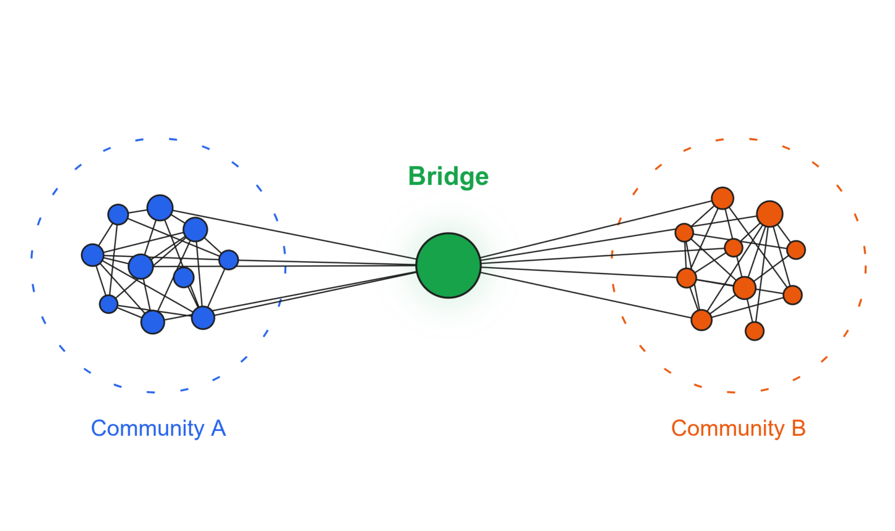
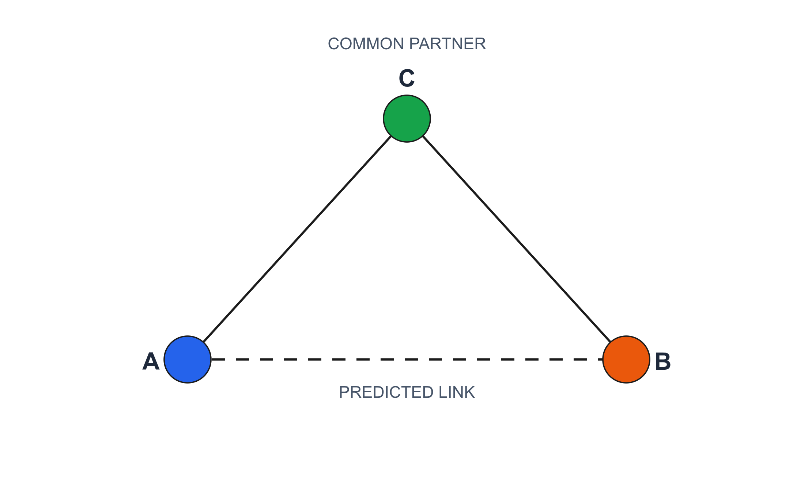
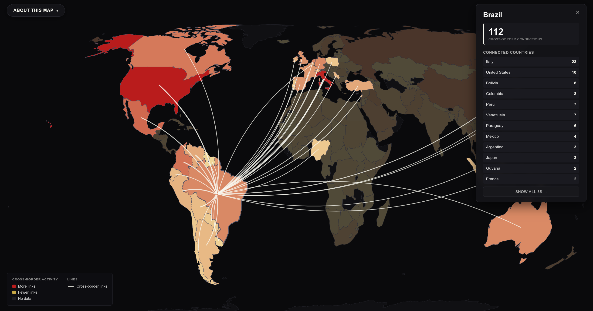

CRIMENET: An AI assistant on global organized crime
4,505 criminal organizations, 10,935 relationships, and an AI that reasons over them. All extracted from Wikipedia, all open source
 CRIMENET: 4,505 criminal organizations connected by 10,935 relationships across cooperation, conflict, and structural ties.
CRIMENET: 4,505 criminal organizations connected by 10,935 relationships across cooperation, conflict, and structural ties.
Six months ago I published the first version of CRIMENET: 1,857 organizations and 3,338 relationships extracted from 771 Wikipedia articles. It proved the idea worked, but it was rough. No quality control. No way to trace connections between two specific organizations. No way to ask a question in plain English and get an evidence-backed answer.
I rebuilt it from the ground up into a knowledge graph of 4,505 criminal organizations and 10,935 relationships, extracted from 1,418 Wikipedia articles across four languages. Every edge carries a verbatim evidence quote, a description, and a versioned Wikipedia URL. Most carry a time period when the source article provides one. Every claim is auditable. On top of the graph sits a GraphRAG AI that answers natural language questions by calling tools against the data and citing its sources. The whole thing runs in your browser, no server, no database.
Everything is open source. The full pipeline is on GitHub, and the live app runs entirely in your browser.
How the knowledge graph is built
The raw material is 1,418 Wikipedia articles about criminal organizations across English, Italian, Portuguese, and Spanish Wikipedia. The extraction pipeline fetches each article, walks the HTML to extract clean body text and infobox tables, then sends it to DeepSeek to extract nodes and edges.1 The taxonomy has three types: cooperation, conflict, and other.2 The pipeline then profiles each organization from its own Wikipedia article (description, country of origin, time period, defunct status, and country footprints, each with its own evidence quote) and merges everything into a single graph, folding variant names across languages so the Sinaloa Cartel and the Cártel de Sinaloa become one node.3
An LLM extraction pipeline produces errors: it conflates names, misses duplicates, invents edges between orgs that were merely mentioned in the same paragraph, and sometimes pulls in non-criminal entities. I built an audit pipeline that targets each class of error, one audit per error type.4 The correction loop is designed to be iterative: spot an error, add one line to the corrections file, re-run the apply step. Manual overrides always win over auto-suggestions.

What is in the graph
The graph holds 4,505 organizations and 10,935 relationships.5 Organizations are based in 80 countries with operational footprints in 163 countries. The edges break down into 4,907 cooperation ties, 3,731 conflict ties, and 2,297 structural or other ties. The scope is criminal organizations: cartels, mafias, gangs, motorcycle clubs, triads, clans, factions, militias, and terrorist groups. Individuals and cybercrime groups are not modeled yet. Both are deliberate current limitations, not oversights.
The dashboard and connection finder
The home page is a two-panel dashboard. The left panel toggles between Organizations (sorted by how connected they are) and Countries (sorted by total activity). Click any name and its full profile renders in the right panel: description, aliases, country of origin, time period, founding and dissolution years, country footprints each with its own evidence quote, and source articles.
The connection finder lets you pick any two organizations and see exactly how they relate. It loads evidence from sharded data files, so the browser fetches tens of kilobytes, not the full dataset.6 You get a Relationship Summary (an LLM-written paragraph synthesizing the full interaction between the two organizations, built offline) and Direct linkages: every edge grouped by relationship type, each with Source, Time, and Quote pills. The evidence quote is the verbatim Wikipedia sentence; the source URL points to the exact article revision. Every claim is auditable.

CRIMENET AI
The dashboard and the connection finder are powerful, but they require you to know what you are looking for. You have to pick organizations, browse lists, navigate tabs.
What if you could just ask a question? Which Mexican cartels have a presence in Colombia? Trace the cooperation network between Italian mafias and South American cartels. Which motorcycle clubs are the most central in the rivalry network? Are there organizations that bridge Russian and Chinese criminal networks? Who might the ‘Ndrangheta be secretly allied with, based on shared connections?
These are complex questions. Answering them requires looking up multiple organizations, finding their connections, tracing paths, checking community membership, filtering by country, computing centrality, and synthesizing the results. A standard chatbot would hallucinate because its training data does not contain a structured database of criminal organizations with source-verified relationships.
I built CRIMENET AI, a GraphRAG system that answers natural language questions by tool calling against the knowledge graph.7 The language model becomes a reasoning engine: it decides which tools to call, interprets their outputs, and synthesizes an answer. The facts come from the graph, and every fact carries a citation.
The system has 13 tools that give the model full access to the graph.8 The agent loop runs entirely in the browser. You ask a question. The browser sends it to DeepSeek with the system prompt and tool definitions. DeepSeek returns either a text answer or a tool call. If a tool call, the browser executes the tool against static JSON files (no server, no database), appends the result to the conversation, and sends it back. The loop repeats until the model produces a final answer, up to 8 iterations.9
The answer comes with two automatically generated sections the AI does not write. Evidence: a structured rendering of every edge the AI used, with Source, Time, and Quote pills, mirroring the connection finder. Sources: every Wikipedia URL that appeared in any tool result, collected automatically and rendered as clickable pills. The AI cannot hallucinate a source because sources are extracted from tool outputs, not from the model’s text.
The design principle is: depend as little as possible on the language model and as much as possible on tool output. Counts are computed in code. Relationship types are returned alongside names. Evidence quotes are carried through every tool. The model reasons; the graph provides the facts.

Here is what it can do.
Communities

A network of 4,505 nodes is too large to read as a list. A community is a group of nodes more tightly connected to each other than to the rest of the network. I ran Infomap community detection on the cooperation graph.10 The result is 224 communities of criminal organizations worldwide, each titled and summarized by DeepSeek.11 No one has detected these communities on a global scale before.
What community does the Sinaloa Cartel belong to?
The AI finds the Mexican and Colombian Cartel Alliance Network (88 members, the largest) and tells you the Sinaloa Cartel sits at its core alongside CJNG, Los Zetas, Gulf Cartel, and the Beltrán-Leyva Organization.
What are the largest criminal communities?
The Global Jihadist Network and Allies (81 members) unites the Taliban, Al-Qaeda, Islamic State Khorasan Province, Lashkar-e-Taiba, and Tehreek-e-Taliban Pakistan. The American Mafia Network (76 members) connects the Chicago Outfit with the Gambino, Genovese, Bonanno, and Lucchese crime families. The Nuova Famiglia Camorra Alliance (53 members) captures the Campania clans. The Hells Angels and Allied Outlaw Gangs community (49 members) reveals the biker network: Hells Angels, Red Scorpions, Independent Soldiers, and the Wolfpack Alliance.
Some communities are smaller but tell a sharper story. The Neo-Nazi Terror Network (26 members) connects Atomwaffen Division, Hammerskins, Feuerkrieg Division, The Base, and Blood & Honour. The Canadian Outlaw Motorcycle Gangs Alliance (23 members) is a coalition united against the Hells Angels: Rock Machine, Satan’s Choice, Popeye Moto Club, and Devil’s Disciples. The PKK-Led Revolutionary Alliance Network (17 members) links the Kurdistan Workers’ Party with Armenian, Palestinian, and Turkish leftist militant groups.
Show me communities related to motorcycle clubs. Find communities with “mafia” in the title.
The AI filters by keyword, surfacing the relevant networks.
Bridges

Some organizations cooperate across community boundaries. A bridge is a node that connects different communities, sitting at the intersection of criminal ecosystems that would otherwise be isolated from each other.
Which organizations bridge the most communities?
The Hells Angels Motorcycle Club is the top bridge, with 88 cross-community edges spanning 27 communities. It connects the cartel network, the American Mafia, the ‘Ndrangheta clans, Italian mafia alliances, and Canadian outlaw biker gangs: five worlds that share little other common ground. The American Mafia follows with 84 cross-community edges across 22 communities, linking Mexican cartels, Camorra clans, the Hells Angels network, and US street gangs. The ‘Ndrangheta bridges 28 communities with 83 cross edges, the most communities reached of any organization. The Sinaloa Cartel spans 20 communities with 72 cross edges. The Mexican Mafia spans only 9 communities but bridges the cartel network, the American Mafia, the Hells Angels, the Brazilian PCC network, and white supremacist prison gangs: five ecosystems that share almost no other common ground.
A bridge is structurally important not because it has many connections, but because its connections reach into different worlds.
What communities does the ‘Ndrangheta bridge?
The AI lists all 28.
Triadic signals

The graph has 10,935 documented relationships, but those are only the relationships Wikipedia happens to record. Many real-world connections are undocumented.
We can infer some of these missing links from the structure of the graph itself. If two organizations share many of the same partners, or the same enemies, it is likely they have a relationship with each other, even if nobody has written it down. This is triadic closure. There are three kinds of signal:12
Common cooperation partners. Friends of friends might be friends.
Common adversaries. Enemies of enemies might be friends.
Both. The two signals combine. An organization pair that shares both cooperation partners and adversaries. This is the strongest signal, because two independent structural patterns point to the same missing relationship.
I computed all three across the entire graph. The result is 2,561 candidate pairs, each scored by how many common partners and adversaries they share, weighted by the strength of those connections.
Who might the ‘Ndrangheta be secretly allied with?
The AI returns candidate pairs ranked by signal strength.
The strongest signal in the entire dataset comes from the Cleveland crime family and the Patriarca crime family. They share 8 cooperation partners (Bufalino, Chicago Outfit, DeCavalcante, Detroit Partnership, Gambino, Genovese, Hells Angels, and Los Angeles crime family) yet have no documented direct edge. The New Orleans crime family and the Patriarca crime family share 6 partners. The Gambino crime family and the Rizzuto crime family share 4 cooperation partners plus a common adversary (the Bonanno crime family): a “Both” signal.
Some signals come purely from shared enemies. The Mongols MC and the Rebels Motorcycle Club share two common adversaries (Bandidos and Hells Angels) with no direct edge. The Comanchero Motorcycle Club and the Rebels Motorcycle Club share three (Bandidos, Hells Angels, and Rock Machine Motorcycle Club). Inside the Mexican cartel system, the Cártel de Santa Rosa de Lima and the Knights Templar Cartel share both cooperation partners (Gulf Cartel, Los Viagras, Sinaloa Cartel) and common adversaries (CJNG, Los Zetas). La Familia Michoacana and the Nueva Plaza Cartel share the Sinaloa Cartel as a common partner and CJNG as a common adversary.
What potential rivalries does the Sinaloa Cartel have based on shared adversaries?
The AI filters for the adversary-only signal and returns candidate pairs.
What makes this powerful is that it uses only the topology. No new data. No additional LLM calls. The graph’s structure alone encodes information about relationships that have not been explicitly recorded.
Centrality
Centrality measures how important a node is in the network. Not all nodes are equal. Some are hubs with many connections. Others sit on the shortest paths between many pairs, controlling the flow of information. The centrality tools give the AI access to degree, betweenness, and PageRank rankings across all 3,521 connected organizations, computed on the full graph and separately on the cooperation and conflict subgraphs.
What is the most important criminal organization in the global network?
The AI consults the centrality rankings and answers with context: which metrics drive the ranking, how the top organizations compare, and what the edges that give them their position actually represent.
Which Mexican cartels have the most network influence? How does the Sinaloa Cartel rank in network importance, and how does it compare to the American Mafia?
The AI cross-references centrality rankings with Mexican organizations, retrieves both profiles with their centrality ranks, and produces a comparison grounded in the numbers.
Paths
A path is a chain of relationships connecting two organizations through intermediaries. If A cooperates with B and B cooperates with C, then A and C are connected by a path of length two, even if they have no direct relationship.
Are the Yakuza and the Sicilian Mafia connected?
The AI runs BFS across the graph up to 5 hops. It returns the shortest path with the evidence quote at each step and walks you through the chain of intermediaries, citing the specific relationship at each link.
Does the Sinaloa Cartel cooperate with the Sicilian Mafia?
The AI searches for cooperation-only paths. If one exists, it traces the route. If not, it tells you there is no documented cooperation path and may suggest alternatives: a conflict relationship, a shorter path through any relationship type, or a shared third party.
Who are the allies of allies of Mara Salvatrucha?
The AI returns first-degree and second-degree connections, grouped by relationship type.
Countries
Every profiled organization carries a list of countries where Wikipedia documents its presence, each backed by a verbatim evidence quote. The AI can query this data directly.
What criminal organizations operate in Brazil? The AI returns every organization with a documented footprint. Which countries does the ‘Ndrangheta have a footprint in? The AI lists all documented country footprints with evidence. Which criminal organizations operate in both Colombia and Venezuela? Compare organized crime in Mexico and Colombia. The multi-country intersection returns only organizations that appear in both lists. A comparison query triggers a broader synthesis: the AI retrieves organizations from both countries, examines their types and connections, and produces a comparative analysis.
Every country footprint is backed by a verbatim evidence quote from Wikipedia. When the AI says an organization operates in a country, you can open the source and read the exact sentence that documents it.
3D knowledge graph
The full network is viewable as an interactive 3D force-directed graph built with three.js. Nodes are colored by organization type, edges by relationship type. You can rotate, zoom, click any node to see its details, and filter by relationship type.
The 3D view does something a 2D layout cannot: it uses the third dimension to disentangle dense clusters. In a 2D force layout, highly connected hubs pull everything into a hairball. In 3D, you can rotate around a cluster and see its internal structure.

World footprints map
The footprints map shows country-to-country operational presence on a D3.js world map. Each organization’s country of origin and its documented footprints create arcs across the map.13 The underlying data comes from the pipeline’s country footprint pass: each link is backed by a verbatim evidence quote from Wikipedia documenting the organization’s presence in that country. Not a statistical guess. A specific sentence.

What this enables
There is, to my knowledge, no larger directory of criminal organizations anywhere. Wikipedia’s own list of criminal enterprises, gangs, and syndicates covers a few hundred groups. CRIMENET comes closer than anything else: nearly 5,000 organizations mapped across nearly 11,000 relationships, each backed by a specific Wikipedia source.
This was an accidental achievement. The goal was to build a knowledge graph of how criminal organizations relate to each other, not to catalog every group mentioned on Wikipedia. But because the LLM pipeline reads nearly 1,500 articles across four languages and extracts every organization mentioned in each one, it ended up capturing the vast majority of criminal organizations documented on English, Italian, Portuguese, and Spanish Wikipedia. CRIMENET became the comprehensive list that did not exist.
Before CRIMENET, if you wanted to know which criminal organizations operate in a given country, or how two specific groups relate to each other, or which organizations bridge different criminal ecosystems, you had to read hundreds of Wikipedia articles and piece it together yourself. The information existed but was not structured.
Now you can ask any question in plain English and get an evidence-backed answer that cites specific Wikipedia sentences. You can trace the exact relationship between any two organizations with verbatim evidence quotes. You can browse 224 communities of organizations that cooperate with each other. You can identify which organizations bridge different criminal ecosystems. You can discover 2,561 candidate relationships that likely exist but have not been documented, inferred purely from the structure of the graph.
Because every edge carries a versioned Wikipedia URL, any claim can be verified in under thirty seconds: open the link, search for the quote, confirm it is there.
Limitations
Wikipedia coverage skews toward English-language and Western sources. The pipeline processes four languages (English, Italian, Portuguese, and Spanish), which is better than one but still leaves gaps.
Relationships are aggregated across time. Every edge carries its own time period, so the data is there, but the graph view flattens time into a single snapshot.
The graph models organizations, not individuals. If you want to trace how a specific boss connects to a specific cartel, you cannot yet: individuals appear only in descriptions and evidence quotes, not as nodes.
Purely cyber criminal groups (ransomware crews, carding rings) are not modeled. The extraction pipeline focuses on physical-world organizations.
None of this is fatal. The architecture is designed for iteration: add more languages, widen the scope, add temporal weights, promote individuals to nodes. Each is a pipeline extension, not a rewrite.
Open source
Everything is open source. The full pipeline (extraction, audit, build, app) is on GitHub. The live app runs entirely in your browser.
The project is designed to be extended. The pipeline is modular: each step reads from and writes to a distinct place. The audit pipeline is modular: each audit targets one class of error. The build scripts are independent: add a new data file by writing one Python script and one JS consumer.
If you find an error, want to add a Wikipedia article, or have ideas for new features, open an issue or pull request on GitHub.
If you have questions or ideas, get in touch.
-
The pipeline proceeds in five steps, each independently re-runnable: (0) resolve plain Wikipedia URLs to versioned URLs with
oldid; (1) fetch HTML via the MediaWiki API and extract clean body text with infobox tables; (2) send the text to DeepSeek, chunked at ~2500 words with the infobox appended to every chunk, to extract organizations and relationships; (3) DeepSeek enriches each profiled organization with description, aliases, country, time period, defunct status, and country footprints; (4) merge all fragments, auto-dedup via fuzzy matching and containment, attach org profiles, and normalize country names. ↩︎ -
Cooperation covers alliances, joint operations, and commercial dealings. Conflict covers fighting, war, and clashes. Other covers structural ties (sub-units, splinters), truces, and unspecified links. ↩︎
-
The name folding handles the common case where an organization appears under different names in different language Wikipedias. A single canonical name is chosen for the merged node, with all variant forms preserved as aliases. ↩︎
-
Seven steps in total. Audits 0 through 5 find wrong merges, missed merges, spurious edges, unsupported country links, umbrella terms, and non-criminal entities. Audit 6 provides an LLM second opinion that can veto identity corrections. A confident-but-wrong split or merge is the most damaging error class. Audit 7 applies all corrections, with manual overrides from a curated file (
curated_corrections.py) always winning over auto-suggestions. ↩︎ -
Of the 4,505 organizations, 1,032 are profiled from their own Wikipedia article (with full descriptions, aliases, country of origin, country footprints, time periods, and defunct status), 3,473 are mention-only (they appear in other orgs' articles but have no dedicated Wikipedia page), and 317 are flagged as defunct. 3,521 organizations (78%) are connected to at least one other; 984 (22%) are isolated. ↩︎
-
Evidence shards are keyed by FNV-1a hash of the organization name, split across 128 files. The browser only fetches the shard that contains the requested org. ↩︎
-
GraphRAG stands for Graph Retrieval-Augmented Generation. A standard RAG system retrieves relevant text chunks and asks the model to reason over them. A GraphRAG system retrieves structured data from a knowledge graph by calling tools that traverse nodes, edges, communities, and paths. The key difference: standard RAG retrieves paragraphs; GraphRAG retrieves structured records with typed relationships. ↩︎
-
The full tool set:
get_organization(profile by name or alias, with centrality ranks);find_by_type(filter by category like cartel, mafia, motorcycle club);get_connections(all edges for an org, or all edges between two orgs, with type counts computed in code);get_relationship_summary(pre-written LLM paragraph for any pair);find_by_country/find_by_countries(single or multi-country footprint lookup);find_paths(BFS shortest path up to 5 hops with evidence at each step);find_cooperation_routes(cooperation-only paths through intermediaries);get_network_neighborhood(first and second degree connections);get_community/find_communities_by_keyword(browse all 224 communities, find which community an org belongs to, or filter by keyword);get_triadic_signals(candidate pairs for any org);get_bridges(ranked cross-community bridge list);get_centrality(degree, betweenness, PageRank across full, cooperation, and conflict graphs). ↩︎ -
Only the DeepSeek API call goes through a Netlify Function proxy. This keeps the API key server-side. Everything else (tool execution, conversation state, evidence collection) runs client-side against static JSON files. ↩︎
-
Infomap simulates a random walk across the network. The walker tends to get trapped inside dense clusters of cooperating organizations and only occasionally jumps between them. Compressing a description of where the walker goes naturally reveals community structure: organizations that cooperate with each other more than with outsiders form a cluster. ↩︎
-
The first run calls the DeepSeek API. Subsequent rebuilds cache by the exact membership set (frozenset of org names), so re-running when the partition is unchanged costs zero API calls. ↩︎
-
Common cooperation partners: two organizations that share at least 3 cooperation partners but have no direct edge between them. Common adversaries: two organizations that share at least 2 common adversaries but have no direct edge between them. The “Both” signal requires both conditions simultaneously. ↩︎
-
The map is on footprints.html. Each arc represents an organization’s footprint from its country of origin to a country where it operates. ↩︎